Electromagnetism
// Magnets · Electromagnets · Solenoids · DC Motors
Learning Outcomes
- Define magnetism, magnets, and magnetic field, as well as electromagnetism and electromagnets
- Operate the solenoid component of the AC/DC Training System
- Explain the principles of operation of DC motors
Topics Covered
What Is Magnetism?
- A material's property to exert a magnetic force (attraction or repulsion) on another material from a distance
- Ferromagnetic materials are strongly attracted to magnets: primarily iron, nickel, cobalt, and some rare earth metals
- Every magnet has two poles: North (N) and South (S)
- Opposite poles attract; like poles repel
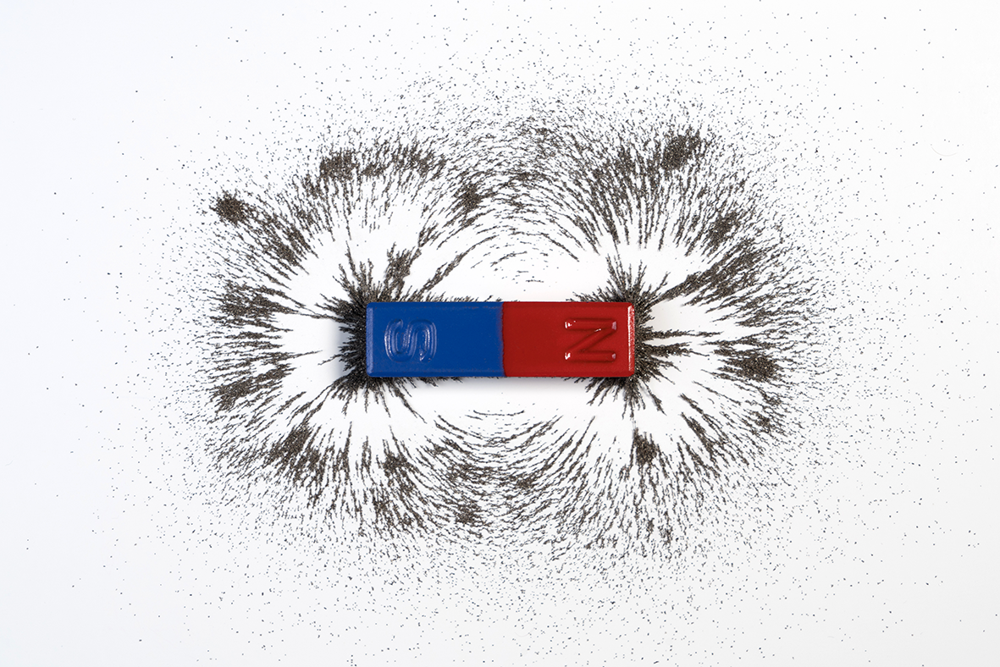
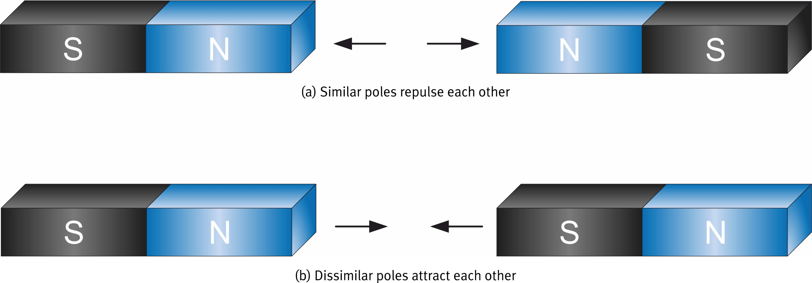
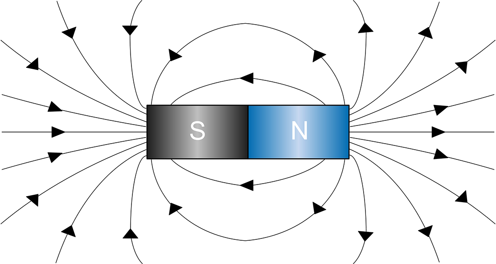
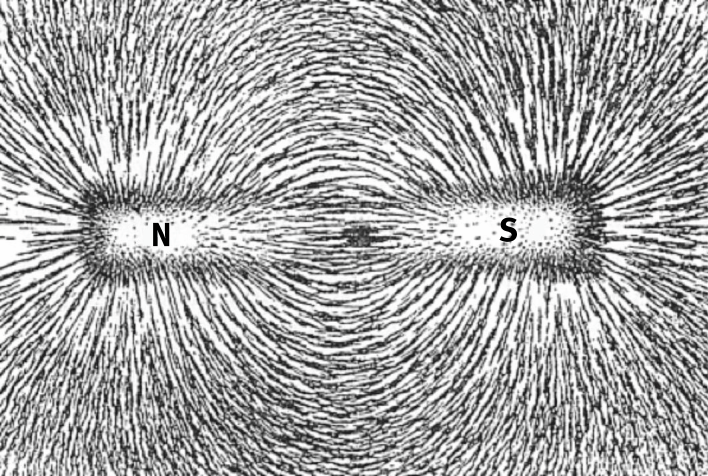
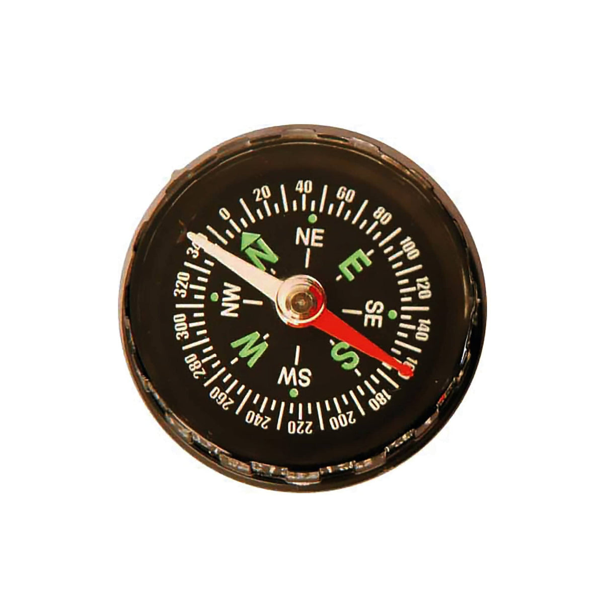
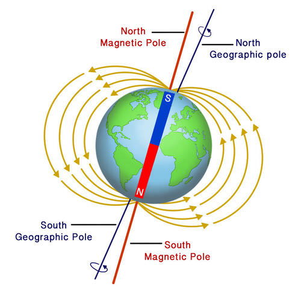
Lines of Force
- Magnetic fields are visualised using lines of force
- Lines exit through the North pole and enter through the South pole
- Iron filings sprinkled around a magnet align along the lines of force, making the field visible
- A compass needle aligns itself along these lines — the red (N) end points toward Earth's magnetic South
Current Creates a Magnetic Field
Natural magnets are rare. But any wire carrying current produces its own magnetic field.
- The field is circular and centered on the wire
- Right-hand rule: wrap your right hand around the wire with the thumb pointing in the direction of current flow. Your fingers indicate the direction of the magnetic field lines
- Reverse the current direction → field direction reverses
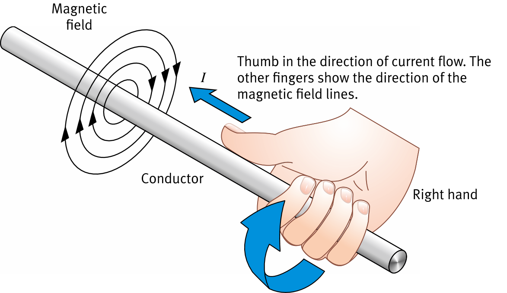
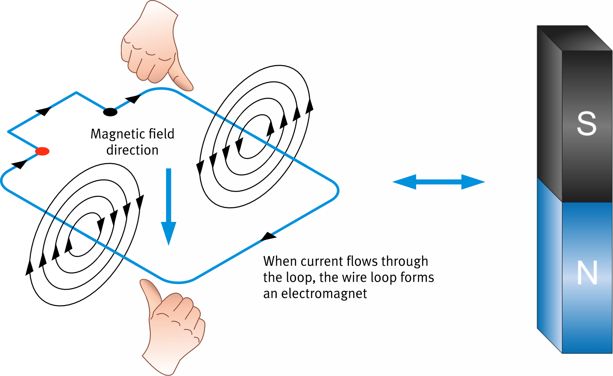
The Electromagnet
Wind the wire in a loop and the circular fields combine to create distinct north and south poles — just like a natural magnet.
- Current in a loop of wire produces north and south magnetic poles
- Use the right-hand rule to find the field direction inside the loop → locate N and S
- More current → stronger magnetic field
- No current → field disappears instantly — unlike natural magnets
The Solenoid
A single wire loop rarely produces enough field for a real application. Winding the wire into a helix solves this.
- A wire wound in the form of a helix is called a solenoid
- Each loop produces a field in the same direction. They all add together
- Total field ≈ field of one loop × number of loops
- The center of the solenoid is called the core
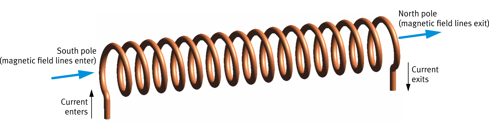
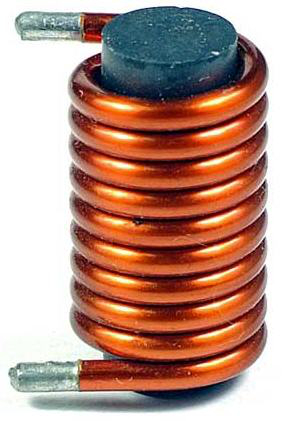
Solenoid with a Plunger
Add a removable iron core — the plunger — and the solenoid produces useful linear mechanical motion.
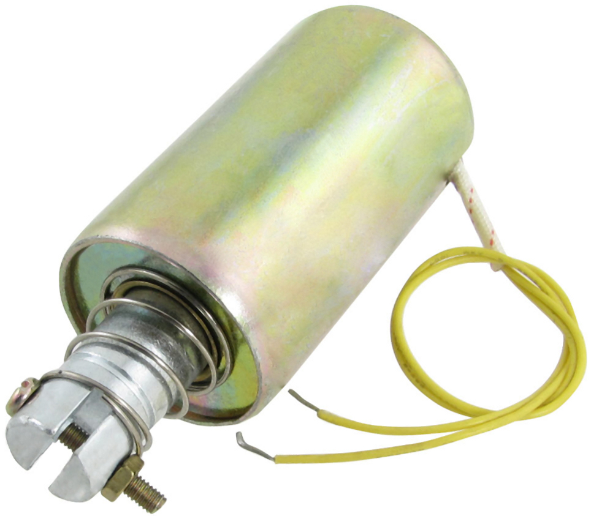
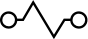
Among othersReal-World Applications
DC Motor Construction
A DC motor converts electrical energy into rotary mechanical motion through the interaction of magnetic fields.
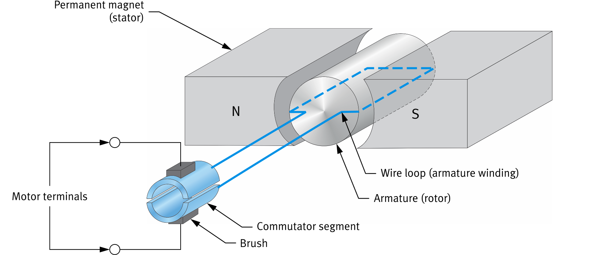
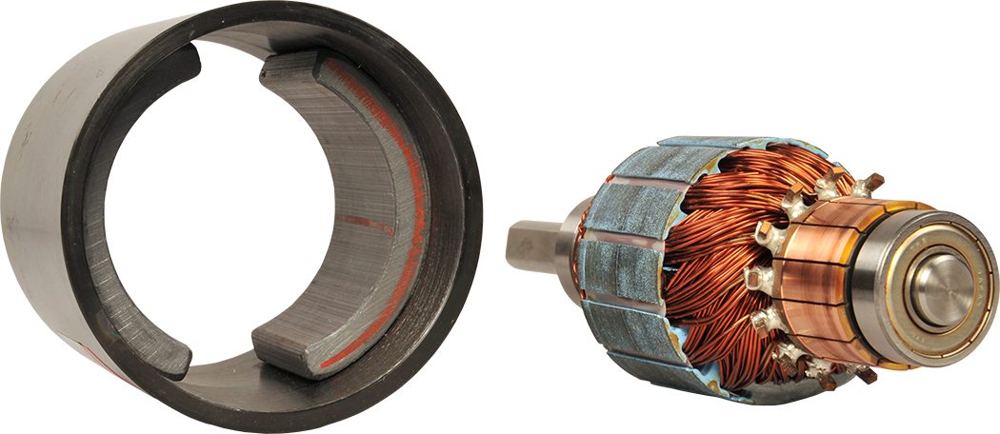
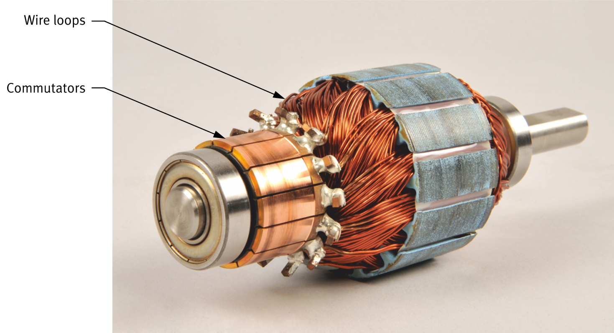
How the Motor Spins
The interaction between the armature's electromagnet and the stator's magnets produces the rotation.

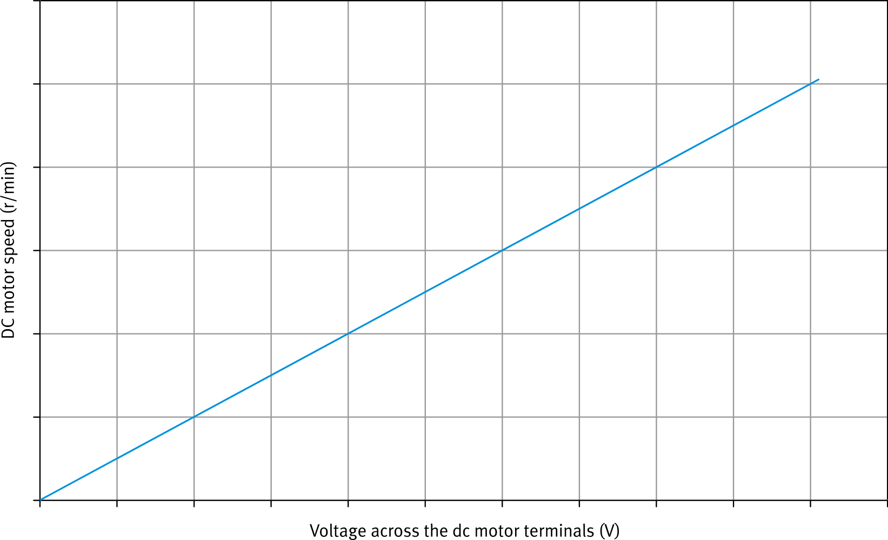
Speed vs Voltage
The rotational speed of a DC motor's rotor is directly determined by the voltage applied to its terminals.
- Speed is directly proportional ( ∝ ) to voltage — double the voltage, roughly double the speed
- Higher voltage → stronger current → greater force on armature → faster rotation
- Speed control is simple: adjust the supply voltage with a variable resistor or power supply
DC Motor Applications
DC motors are among the most common motors in the world due to their ease of construction and precise speed control.